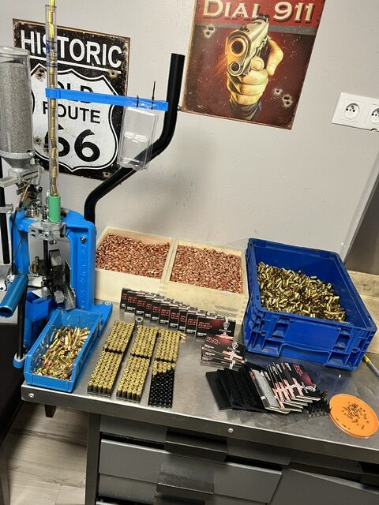
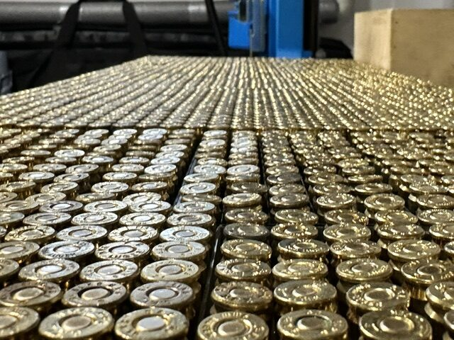
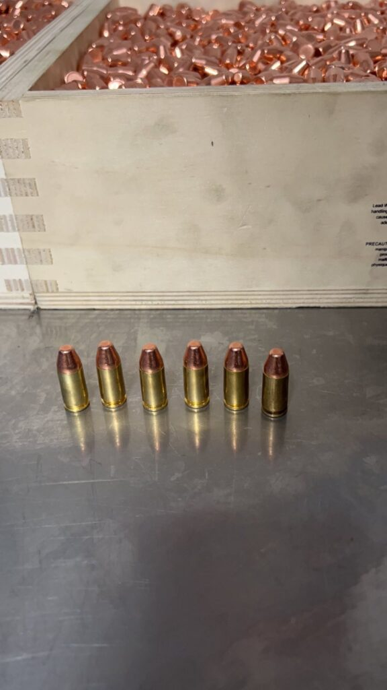
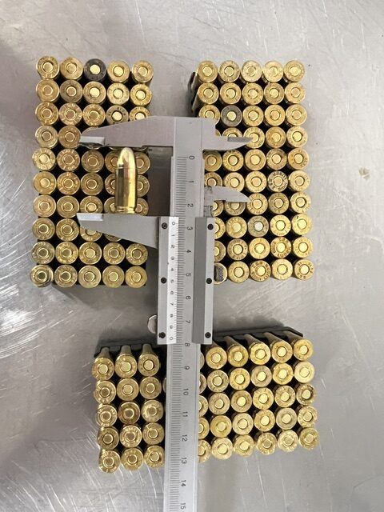
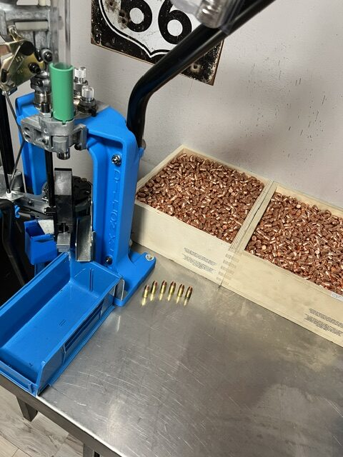
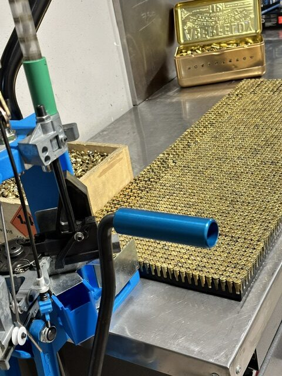
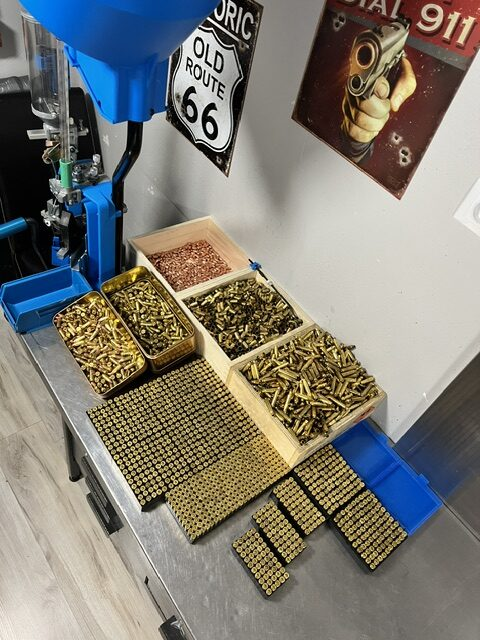
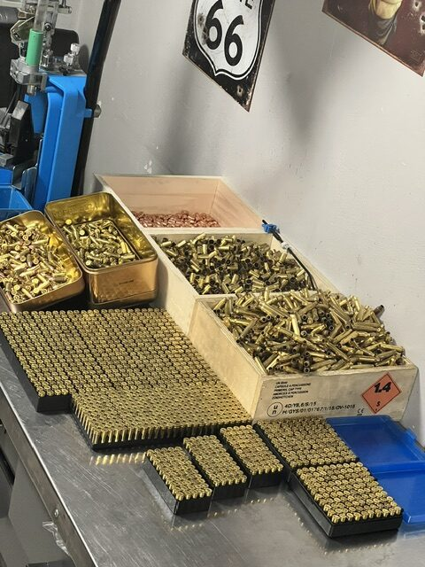
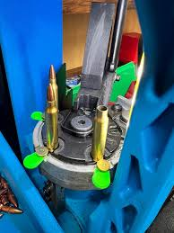
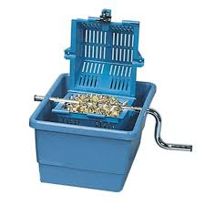

Wstęp do reelaboracji część I
2025-11-09

Reelaboracja – a na co to komu?
Na pewnym etapie rozwoju hobby strzeleckiego większość posiadaczy broni palnej natknie się na niewiele – na pierwszy rzut oka przynajmniej – mówiące pojęcie „elaboracji”. Za słownikiem języka polskiego, elaboracja – z łacińskiego elaboratio ‘obróbka’ – to zespół czynności w procesie produkcji amunicji lub przygotowania jej do użycia. Polska ustawa o broni i amunicji dopuszcza bowiem wytwarzanie amunicji na własny użytek przez osoby posiadające pozwolenie na broń myśliwską, sportową lub kolekcjonerską (art. 10 ust. 6 pkt 4 UoBiA). Warto podkreślić, że amunicji elaborowanej (czyli wytworzonej tylko z nowych podzespołów, w tym łusek) lub reelaborowanej (z użyciem łusek już użytych, odstrzelonych), może używać jedynie osoba, która taką amunicję wytworzyła. Absolutnie niedopuszczalna jest sprzedaż takiej amunicji, gdyż jest to czynność wymagająca stosownych koncesji.
Po co w ogóle rozważać własnoręczne składanie amunicji w sytuacji, gdy strzelcy mają swobodny dostęp do szerokiej gamy amunicji fabrycznej? Pokrótce omówię poniżej kilka podstawowych przyczyn, dla których posiadacze broni decydują się na elaborację amunicji centralnego zapłonu.
Precyzja ponad wszystko
Znaczącą część środowiska elaborantów stanowią osoby, które poszukują amunicji dopasowanej stricte do ich jednostki broni. Zaawansowani strzelcy precyzyjni, długodystansowi w zasadzie korzystają wyłącznie z amunicji elaborowanej osobiście. Dlaczego

Pomimo tego, że proces produkcyjny podzespołów broni – szczególnie komór czy luf varmintowych – jest ultraprecyzyjny, to każda jednostka będzie nieco różnić się od siebie. Elaboracja pozwala na dobór właściwego wagomiaru pocisku, jego typu oraz jakości. Nawet różnica rzędu 0,2 -0 ,5 grana (ang. grain, podstawowa jednostka miary w elaboracji, ok. 0,06 grama) pomiędzy pociskami może przy strzelectwie na 300 i więcej metrów dać wymierną różnicę na tarczy. W trakcie elaboracji można te różnice zniwelować sortując pociski wagomiarami.
Analogiczne zasady dotyczą naważek (ilość prochu w naboju) i doboru właściwego prochu do danego kalibru i jednostki broni. Istotna jest nawet pojemność łusek stosowanych w danej serii amunicji.
Metodą prób i błędów, ale przede wszystkim pomiarów prędkości pocisku czy powtarzalności strzałów, możliwe jest dobra nie idealni e dopasowanej amunicji, pozwalającej na maksymalne wykorzystanie osiągów broni. Dostępna paleta pocisków, szczególnie w popularnych dla strzelania precyzyjnego kalibrów, takich jak .223 Remington, .308 Winchester, 6.5 Creedmoor, jest znacznie szersza niż w amunicji produkowanej fabrycznie. Fabryczna amunicja z pociskami precyzyjnymi jest też istotnie droższa od podstawowej, czym płynnie przechodzimy do kolejnej przesłanki, czyli…
Kasa misiu, kasa …
Jak każde hobby, również i elaboracja może być kolejnym wirem w ciągającym nasze pieniądze w zastraszającym tempie. Górna granica wydatków nie istnieje. Niemniej jednak nie od razu Rzym zbudowano, więc i my możemy nasze wyposażenie budować powoli. Podstawowy zestaw, który pozwoli nam składać najprostsze kalibry (szczególnie rewolwerowe .357 Magnum/.38 spec. albo pistoletowe .45ACP lub .9×18 Makarow) może przy dobrych wiatrach zamknąć się w okolicach 1.100 złotych. Prosta prasa jednostanowiskowa w zestawie z matrycami dla jednego kalibru to około 600 złotych, mikro wagę do ustawienia podajnika prochu kupimy za 200 -3 00 złotych, a popularny podajnik objętościowy do odmierzania naważek – poniżej 200 złotych. Tak uzbrojeni możemy przystąpić do elaboracji taniej amunicji, która może nie będzie superprecyzyjna, ale teoretycznie obniży nam koszty strzelania. Czemu teoretycznie? Bo doświadczenie uczy, że raczej nie będziecie wydawać mniej, ale za te same pieniądze postrzelacie więcej.
Choć każdy kaliber wymaga odrębnego zestawu matryc (koszt 200 -400 złotych / kaliber, choć bywa, że można taniej kupić używane), to niektóre podzespoły wykorzystacie do różnych kalibrów. Kupując więcej spłonek – dzielimy je na małe i duże, pistoletowe i karabinowe – jednym zakupem obsłużycie np. większość kalibrów pistoletowych i rewolwerowych albo praktycznie wszystkie kalibry karabinowe. Proch? Bywa w miarę uniwersalny (np. Reload Swiss R S1 2, Lovex D032, Vihtavouri N320), więc znajdzie za stosowanie i do .7.65 Browning do waszego Walthera PPK i do .38 special w Smith&Wessonie i do .45 ACP w Colcie 1911.
Jak prosto
policzyć koszt wytworzenia naboju? Doskonale wiesz, że nabój składa się z łuski, spłonki, prochu
i pocisku. Dokładne ceny poszczególnych składowych znajdziesz na stronach
sklepów
internetowych.



Łuski możesz wykorzystać wielokrotnie (karabinowe po 8-12 razy, rewolwerowe są w zasadzie nieśmiertelne). Jeżeli ich nie masz, kup kilka paczek amunicji i wykorzystaj po odstrzeleniu. Na forum znajdziesz od czasu do czasu ogłoszenia strzelców, którzy sprzedają swoje odstrzelone łuski. Łuski bez spłonki albo ze spłonką zbitą nie są istotną częścią amunicji i możesz wysłać je pocztą czy kurierem. Pamiętaj, że tylko łuski mosiężne ze spłonką typu boxer (pojedynczy kanał ogniowy) nadają się do elaboracji.
Pociski również kupisz w sklepie internetowym. Musisz dobrać właściwy kaliber i wagomiar. Na początku staraj się trzymać pocisków bliskich fabrycznym – najczęściej będzie to pocisk pełnopłaszczowy (FMJ), o wadze widniejącej na opakowaniu amunicji. Także pociski sklep może przesłać ci za pośrednictwem kuriera.

Spłonki są istotną częścią amunicji, zatem albo kupisz je w sklepie stacjonarnym, albo zamówisz je z dowozem wykonywanym przez sklep. Na początku przygody z elaboracją nie musisz szczególnie zastanawiać się nad jakością tego elementu – wszystkie dostępne na rynku są jak najbardziej użyteczne. Najtańsze będą Fiocchi pakowane po 150 sztuk albo Sellie&Bellot pakowane po 100 sztuk.


Wyceniając koszt prochu, najlepiej kierować się tabelami producentów, znajdującymi się na ich stronach internetowych. Najbardziej przyjazne są strony Reload Swiss i Vihtavouri – możesz na nich wybrać interesujący cię kaliber, a strona dobierze proch. Zaznaczając właściwą wagę pocisku dowiesz się ile prochu zużyjesz na jeden nabój. P roch jest pakowany zazwyczaj w opa kowania 0,5 i 1 kilogram. Dzieląc pojemność opakowania przez zużycie prochu na j eden nabój dowiesz się ile na boi powinieneś złożyć z jednego opakowania. Podziel cenę opakowania przez liczbę naboi, a ustalisz koszt prochu w naboju.
Przykład: Pocisk RN FP o wadze 158 gn wymaga użycia maksymalnie 0,45 grama prochu Vihtavouri N320. Opakowanie zawiera 500 gramów prochu.
500 /0,45 = 1.110
naboi
Opakowanie kosztuje 300 złotych.
300/1.100 = 0 ,27 złotych
Przy założeniu że
elaborant dysponuje łuską .357 Magnum (koszt 0 zł), spłonka mała pistoletowa to koszt 0,25
złotego, proch to 0,27 złotych, a pocisk to koszt 0,50 złotego to złożenie naboju w takiej
konfiguracji będzie kosztowało nas 1,02 złotych.
To oczywiście duże uproszczenie, bo nie obejmuje kosztów np. dostawy spłonek i prochu czy pocisków, kosztów naszej pracy, kosztów umycia łusek itd. Z drugiej strony fabryczna amunicja również nie pojawia się magicznie w naszej szafie, do sklepu musimy przecież dojechać.
Które kalibry będą cechować się największą oszczędnością? Rewolwerowe – 32 S W, .38 spec, .357 magnum, .44 magnum. Pistoletowe – 7.65 Browning, .25ACP, 9×18 Makarow, .45 ACP. Wszystkie łączy niewielka (w porównaniu z karabinowymi) naważka prochu, stosunkowo tanie pociski i kompletnie nieadekwatnie wysoka cena amunicji fabrycznej.
W poszukiwaniu Świętego Graala
Ostatnią z przyczyn, dla której decydujemy się na samodzielne składanie amunicji, jest dostępność amunicji. Taką nienachalnie dostępną amunicję możemy podzielić na:
1) zazwyczaj dostępną, ale akuratnie na drugim końcu kraju w wyspecjalizowanym sklepie;
2) kompletnie niedostępną amunicję typowo historyczną.
Pierwszy typ to amunicja produkowana na bieżąco (zazwyczaj przez PPU albo Sellier Bellot), natomiast w kalibrze nieszczególnie stanowiącym główną linię produkcyjną. Chcesz kupić .223 Remington albo 9×19 Parabellum? Oczywiście, ile palet? W jakim wagomiarze? Amunicja do 7.5 x55 Swiss, 6.5 Arisaka, .303 Brit – no tu już tak różowo nie będzie. Tak, bywa, ale do sklepu trzeba dojechać 100-150 kilometrów. Żeby to miało sens, wypadałoby kupić z 500 sztuk. Po 5 złotych sztuka. I jeszcze zapchać nią sejf, a sejf jak wiadomo – zawsze za mały.


Równocześnie proch i spłonki na 500 sztuk takiej amunicji zajmie niewiele miejsca, będą kosztowały 20 -25% ceny samej amunicji, a znajdziesz je w sklepie w mieście obok. Pociski możesz kupować sukcesywnie, a jakość tej amunicji będzie lepsza. Możesz zastosować słabsze naważki, żeby nie katować stuletniego karabinu.
Drugi typ to amunicja typowo historyczna, do broni produkowanej niszowo – Nambu, .38 Colt New Police, 7.62 Nagant , 7.5×54. Jeśli już jakimś cudem partia takiej amunicji trafi na rynek, to potrafi kosztować tyle, że strzelając masz wrażenie, że w tym kwartale na śniadanie, obiad i kolację będziesz raczej jadł chleb posmarowany nożem. Tymczasem koszt wykonania takiej amunicji potrafi być śmiesznie niski, przy czym z góry trzeba założyć, że konieczne będzie kupienie łusek – najczęściej Starline, która wypuszcza na rynek łuski w kalibrach również już nieprodukowanych.
Warto, nie warto?
Na to pytanie musisz odpowiedzieć sobie sam(a). Część osób elaborujących traktuje to jako część hobby strzeleckiego, pozwalające na obcowanie z bronią w przerwach od strzelnicy do strzelnicy, pozostali wykorzystują elaborację typowo użytkowo, czasem jako zło konieczne, żeby mieć czym strzelać. Zajęcie potrafi dać sporo frajdy, choć musisz pamiętać, że to zabawa z materiałami wybuchowymi. Konieczne jest najpierw przyswojenie teorii i zawsze (zawsze!) zachowywanie zasad bezpieczeństwa. Dla mnie elaboracja stała się nieodłączną częścią strzelectwa, pozwalającą z jednej strony na poprawienie osiągów na tarczy i strzelania więcej przy zachowaniu budżetu, z drugiej – na uniezależnienie się od dostępności amunicji na rynku.
.
red. Łukasz Elaborant
Zdjęcia Łukasz Sikora , dzięki!
👋